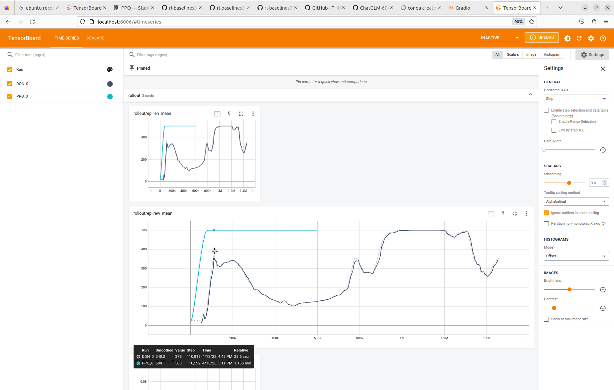
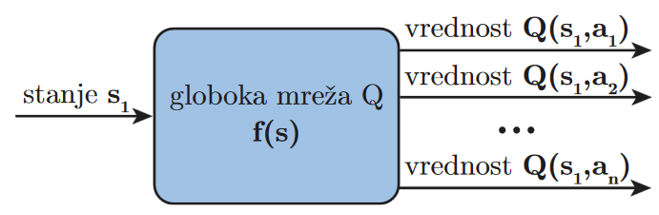
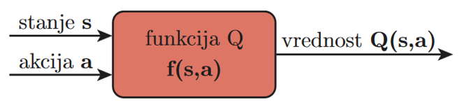

Učenje z nevronskimi mrežami z metodo DQN
Globoko spodbujevalno učenje

https://spinningup.openai.com/en/latest/spinningup/rl_intro2.html
DQN
Q-učenje je algoritma za spodbujevalno učenje, ki uporablja tabelo za shranjevanje vrednosti Q za vsak par stanje-akcija. Ker pa prostor stanj postaja vse večji in kompleksnejši, postane shranjevanje vseh vrednosti Q v tabeli nepraktično. Tu pride na vrsto DQN.
DQN je vrsta algoritma za Q-učenje, ki za izračun (približka) vrednosti Q uporablja nevronsko mrežo. Nevronska mreža sprejme stanje kot vhod in kot izhod izračuna vrednosti Q za vsako možno akcijo. Mreža je naučena s kombinacijo ponovitve izkušenj in »target« nevronske mreže za izboljšanje stabilnosti in učinkovitosti.
Tehnika ponovitve izkušenj se uporablja za izboljšanje učinkovitosti učenja. Namesto da bi nevronsko mrežo učili takoj na vsaki izkušnji, se izkušnje shranijo v spomin in se iz njega naključno izbere serija izkušenj za učenje mreže. To ima več prednosti. Prvič, pomaga prekiniti korelacijo med zaporednimi izkušnjami, kar lahko zmanjša verjetnost, da bo mreža obtičalo v lokalnem optimumu. Drugič, nevronski mreži omogoča, da se uči iz širšega razpona izkušenj, kar lahko privede do boljše posplošitve in boljšega delovanja.
»Target« nevronska mreža je ločena kopija glavnega nevronske mreže, ki se med učenjem uporablja za izračun ciljnih (»target«) vrednosti Q. V DQN uporabljamo »target« nevronsko mrežo za reševanje problema, znanega kot "problem premikajoče se tarče". Ta težava nastane, ko uporabimo isto omrežje za izračunavanje napovedi vrednosti Q in ciljnih vrednosti Q ter po vsaki napovedi posodobimo uteži nevronske mreže. To lahko povzroči hitro in nestanovitno spreminjanje ciljnih vrednosti Q, kar lahko privede do nestabilnosti v procesu učenja. Za rešitev te težave uporabimo »target« nevronsko mrežo, ki je kopija glavne nevronske mreže, vendar z zamrznjenimi parametri. »Target« nevronska mreža se uporablja za izračun ciljnih vrednosti Q, uteži glavnega omrežja pa se redno posodabljajo le z uporabo ciljnih vrednosti Q, ki jih izračuna ciljno omrežje. To stabilizira postopek učenja in omrežju omogoča učinkovitejše učenje.
Najprej začnemo z vhodnim stanjem kor vhodom v nevronsko mrežo. Mreža nato vrne vrednosti Q za vsako možno akcijo. Podobno kot pri Q-učenju ne izberemo akcije z najvišjo vrednostjo Q. Namesto tega uporabimo tehniko, imenovano "epsilon-greedy exploration", kjer z verjetnostjo epsilon izberemo naključno akcijo in z verjetnostjo 1-epsilon izberemo akcijo z najvišjo vrednostjo Q. To algoritmu omogoča, da raziskuje nove akcije in potencialno najde boljše rešitve. Ko izberemo akcijo, jo izvedemo in opazujemo dobljeno nagrado in novo stanje. Ta izkušnja se shrani v spomin za ponovitev, ki ga bomo pozneje uporabili za učenje mreže.
Nato naključno izberemo serijo izkušenj iz spomina in jih uporabimo za učenje mreže. Vendar mreže ne želimo vedno znova učiti na istih izkušnjah, saj to lahko privede do pojava »overfitting«. Za rešitev te težave uporabimo »target« nevronsko mrežo, ki je kopija glavnega nevronske mreže, vendar z zamrznjenimi parametri. To »target« nevronsko mrežo uporabimo za izračun končnih vrednosti Q za vsako izkušnjo, nato pa posodobimo parametre glavne mreže, da čim bolj zmanjšamo razliko med napovedanimi vrednostmi Q in končnimi vrednostmi Q. Ta postopek se ponavlja iterativno, pri čemer nevronska mreža nenehno izboljšuje svoje ocene vrednosti Q, ko se uči iz izkušenj.
Če povzamemo, je DQN vrsta algoritma za Q-učenje, ki za oceno vrednosti Q uporablja nevronsko mrežo. Združuje ponovitev izkušenj in »target« nevronsko mrežo za izboljšanje stabilnosti in učinkovitosti. Z uporabo te metode lahko obravnavamo večje in bolj zapletene prostore stanj ter na koncu dosežemo boljše rezultate kot z Q-metodo.
PPO
DQN (Deep Q-Network) in PPO (Proximal Policy Optimization) sta priljubljeni metodi za spodbujevalno učenje, ki se uporabljata za učenje agentov za izvajanje določenih nalog. Vendar se razlikujeta glede na pristop in cilje. DQN je na Q vrednosti temelječa metoda spodbujevalnega učenja, ki uči vrednosti Q (pričakovane prihodnje nagrade) za vsak par stanje-akcija. Cilj DQN je naučiti se optimalno funkcijo Q, ki povezuje stanja z akcijami. To dosežemo z učenjem globoke nevronske mreže za oceno vrednosti Q z uporabo kombinacije ponovitve izkušenj in »target« nevronske mreže.
PPO pa je metoda spodbujevalnega učenja na podlagi strategije, ki se neposredno uči strategija za preslikavo iz stanj v akcije. Cilj PPO je maksimizirati pričakovano kumulativno nagrado agenta z iskanjem optimalne strategije. To se doseže z optimizacijo nadomestne objektivne funkcije, ki zagotavlja, da se nova strategija ne razlikuje preveč od stare.
Čeprav se lahko tako DQN kot PPO uporabljata za diskretne in zvezne prostore akcij, se razlikujeta po učinkovitosti vzorčenja, stabilnosti in enostavnosti izvajanja.
DQN je na splošno manj vzorčno učinkovit kot PPO, saj za učenje natančne funkcije Q potrebuje veliko število učnih vzorcev. Vendar je DQN znana po svoji stabilnosti in se uspešno uporablja v številnih aplikacijah, tudi v robotiki.
Po drugi strani pa je PPO znana po svoji učinkovitosti vzorčenja in je dokazano dosegla vrhunske rezultate pri številnih nalogah zveznega vodenja. PPO je tudi razmeroma enostavna za izvajanje, saj ne potrebuje ponovitve izkušenj ali ločene »target« nevronske mreže.
Čeprav sta DQN in PPO zmogljivi metodi učenja za spodbujevalno učenje, se razlikujeta po pristopu in ciljih. DQN je metoda, ki temelji na vrednosti in se uči optimalne funkcije Q, PPO pa je metoda, ki temelji na strategiji in se neposredno uči optimalne strategije.
A2C
A2C pa je metoda spodbujevalnega učenja, ki temelji na strategiji in se neposredno uči strategije (preslikava med stanji in akcijami). Cilj A2C je maksimizirati pričakovano kumulativno nagrado agenta z iskanjem optimalne strategije, podobno kot PPO. To se doseže s hkratnim učenjem dveh nevronskih mrež: »actor« nevronska mreža, ki aproksimira strategijo, in »critic« nevronske mreže, ki ocenjuje funkcijo vrednosti.
Ključna razlika med DQN in A2C je, da je DQN metoda »off-policy”, kar pomeni, da se uči optimalne vrednosti Q z uporabo ločene strategije, medtem ko je A2C metoda »on-policy”, kar pomeni, da se uči strategije in funkcije vrednosti neposredno iz trenutne strategije.
Druga razlika je, da se DQN lahko uporablja tako za diskretne kot za zvezne prostore akcij, medtem ko se A2C običajno uporablja za diskretne prostore akcij. Poleg tega je A2C na splošno bolj vzorčno učinkovita kot DQN, saj se lahko uči iz delnih trajektorij, medtem ko DQN za posodobitev svojih vrednosti Q potrebuje celotne trajektorije.
Trajektorija $\tau$ je sekvenca parov $stanje_0$->$akcija_0$->$stanje_1$->$akcija_1$->...
Ključna razlika med PPO in A2C je v tem, da PPO uporablja »clipped« objektivno funkcijo, da prepreči prevelike spremembe strategije ob vsaki posodobitvi, medtem ko A2C uporablja »advantage« funkcijo za oceno kakovosti vsake akcije glede na trenutno strategijo.
Druga razlika je, da je PPO na splošno bolj vzorčno učinkovit kot A2C, saj uporablja tehniko, imenovano vzorčenje po pomembnosti, za popravke posodobitev gradienta. Vzorčenje po pomembnosti omogoča, da se PPO uči iz stare strategije, kar lahko izboljša učinkovitost vzorčenja.
Čeprav sta tako PPO kot A2C učinkoviti metodi za spodbujevalno učenje, se razlikujeta po pristopu in ciljih. PPO je metoda, ki temelji na strategiji in se uči optimalne strategije z uporabo optimizacije in »clipped« objektivne funkcije, A2C pa je prav tako metoda, ki temelji na strategiji in se uči optimalne strategije in funkcije vrednosti z uporabo »advantage« funkcije prednosti.
“Advantage” funkcija je temeljni koncept spodbujevalnega učenja, ki se uporablja za oceno kakovosti vsake akcije agenta glede na trenutno strategijo. Meri, koliko boljša je akcija v primerjavi s povprečno akcijo izvedeno na podlagi trenutne strategije, in se uporablja za posodabljanje strategije in funkcije vrednosti.
Bolj formalno je funkcija prednosti A(s, a) opredeljena kot razlika med vrednostjo Q (pričakovana kumulativna nagrada) za akcijo a v stanju s in funkcijo vrednosti (pričakovana kumulativna nagrada po trenutni strategiji) stanja s:
A(s, a) = Q(s, a) - V(s)
“Advantage” funkcija je pomemben gradnik številnih algoritmov spodbujevalnega učenja, kot sta A2C in PPO. Agentu omogoča razlikovanje med dobrimi in slabimi akcijami z izračunom pričakovanega izboljšanja dolgoročne nagrade za določeno akcijo v primerjavi s povprečno akcijo izvedeno na podlagi trenutne strategije. Ta informacija se uporabi za posodobitev strategije na način, ki agenta spodbuja k sprejemanju akcij, ki so boljša od povprečne akcije.
Eden od načinov za oceno funkcije prednosti je uporaba napake TD (napake časovne razlike) med ocenjeno funkcijo vrednosti in opazovano nagrado. To lahko storimo z metodo, imenovano enostopenjsko učenje TD (temporal difference), ki v vsakem časovnem koraku posodobi funkcijo vrednosti in “advantage” funkcijo. Drug pristop je uporaba natančnejše ocene “advantage” funkcije, kot je posplošena ocena prednosti (GAE), ki združuje več časovnih korakov, da zagotovi stabilnejšo oceno “advantage” funkcije.
“Advantage” funkcija je ključen gradnik algoritmov spodbujevalnega učenja, ki se uporablja za oceno kakovosti vsake akcije agenta. Agentu omogoča, da se nauči, katere akcije so boljše od drugih, ter ustrezno posodobi strategijo in funkcijo vrednosti.
Primer učenja z DQN in PPO 
Praktična uporaba
- Učenje z nevronskimi mrežami z metodo DQN
- Uporabimo python paket Stable Baselines3 (SB3)
- Stable-Baselines3 Docs
- Stable Baselines3 omogoča celo vrsto drugih algoritmov
- A2C
- PPO
- Razširitev SB3 Contrib
- dodatni sodobnejši algoritmi
- SB3 Contrib dokumentacije
- Github repozitorij
Q tabela

Aproksimacija Q tabele s funkcijami
Diskretne akcije 
Zvezne akcije 
Aproksimacija Q tabele z nevronsko mrežo

Python skripta za učenje agenta
- Nova python skripta
-
Incializacija okolja in učenja
3. Preverimo prostor akcij in opazovanja -
Inicializiramo učenje agenta
-
Podatki za inicializacijo so na spletni strani ter na rl-baselines3-zoo
policy_kwargs = dict(net_arch=[256, 256]) model = DQN('MlpPolicy', env=env, learning_rate=4e-3, batch_size=128, buffer_size=10000, learning_starts=1000, gamma=0.99, target_update_interval=600, train_freq=16, gradient_steps=8, exploration_fraction=0.2, exploration_final_eps=0.07, policy_kwargs=policy_kwargs, seed=2, verbose=1 ) -
Učenje agenta
-
Shranimo model
Python skripta za testiranje agenta
- Nova python skripta
-
Incializacija okolja in učenja
-
Naložimo in incializiramo agenta
-
Zaženemo in testiramo agenta
mean_reward, std_reward = evaluate_policy(model, model.get_env(), n_eval_episodes=10) print(f'Mean reward: {mean_reward}, Std reward: {std_reward}') obs = env.reset() while True: action, _state = model.predict(obs, deterministic=True) obs, reward, done, info = env.step(action) env.render() if done: obs = env.reset()